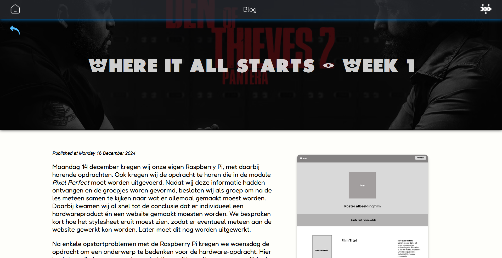

Published at Monday 6 Januari 2025
De tweede week van de module Pixel Perfect stond in het thema van de styleguide voor de website. Maandag 16 December kregen wij de opdracht om individueel een styleguide te maken voor de individuele en groepswebsite. Hieronder is de styleguide die ik heb gemaakt te zien.
Ik heb in de styleguide de logo's, kleurpalette, typografie, buttons en iconen opgenomen. Voor de logo's heb ik foto's gezocht van de film Monster en Co en daaruit geconcludeerd dat het logo van het bedrijf Monster INC uit de film het meest geschikt was. Ik vond daarbij het bovenste logo met de M en de cirkel eromheen als het hoofdlogo. Daaronder vond ik dat ook vaak de tekst gebruikt wordt door de filmmakers en daarom heb ik die ook toegevoegd, waaronder ik tot slot ook nog een alternatief met een blauw blok gevonden voor eventuele kleurconflicten.
Daarna heb ik de voorkant van de film in de kleurpicker van Coolors gebruikt om mogelijke kleuren daaruit te halen. Daaruit zag ik dat sowieso Lapis Lazul en Mantis gebruikt konden worden, omdat die twee kleuren symbool staan voor de hoofdfiguren in de Monster en Co film. Baby Powder kwam niet meteen uit de kleurpicker, maar eerder een soort beige kleur. Ik ging daarbij die kleur toevoegen aan de website en ondervond dat het een enorm lelijke kleurcombinatie als resultaat gaf. Vanwege die reden ging ik in het Color Wheel naar een iets wittere kleur wat overeenkomt met het blauw- en groenkleurige kleurenpalet wat ik al had staan. Daarna vond ik dat er nog een wat donkere kleur bij hoorde zodat de balans in het kleurenschema beter zou worden en er voldoende contrast aanwezig was. Hiervoor heb ik de kleur genaamd Jet gekozen. Ook deze kleur kwam niet van oorsprong uit de afbeelding maar heb ik zelf uitgezocht, omdat ik niet tevreden was met de grijsachtige kleur uit de picker. Ik heb eerder met Jet gewerkt en probeerde deze toe te voegen aan het palet en kwam erachter dat deze kleur ook bij de andere kleuren past.
Toen ik mijn eigen styleguide op mijn website implementeerde, was ik wel meteen tevreden, want de kleuren komen goed overeen met wat ik in gedachte had. Op mijn website heb ik na lang twijfelen besloten om mijn navigatiebalk in de kleur Jet te doen met een doorzichtige laag waardoor er doorheen gekeken kan worden en dat een mooi effect geeft. Daaronder heb ik een schaduw toegevoegd in de kleur Lapis Lazul zodat het blauwe karakter er ook in verwerkt wordt. Ook heb ik de iconen toegevoegd aan de navigatie en gesleuteld met de grootte daarvan. Echter heb ik voorlopig besloten om de blogheadline nog geen icoon te geven, omdat het mooier overkomt in tekst. Met de overlay heb ik ervoor gekozen om op elke pagina van de blog een afbeelding te tonen als opening met een zwart doorzichtige laag daaroverheen met een h1-tekst in het midden van de afbeelding. Alleen op de homepage bedekt de afbeelding heel het scherm. Hieronder is een voorbeeld te zien van hoe de afbeelding met kop weergegeven wordt.
Ons onderwerp is in de loop van de week ook veranderd, want we besloten, weliswaar na bezwaar van met name mij, dat het onderwerp minder breed moest worden en het onderwerp veranderde dus naar Monsters en Co. Iedereen vertegenwoordigt een personage van de film. Ik heb uiteindelijk gekozen voor Henry J. Waterreus, de directeur van Monster INC. Ondanks dat ik het jammer vind dat de groep van onderwerp is gewisseld, heb ik wel het volle vertrouwen dat het alsnog goed komt en er een mooi resultaat gaat komen.
Ik was zelf helaas niet aanwezig in de les van vrijdag en dus is er naar mijn weten ook geen volledige beslissingen gemaakt over de styleguide. De eerste les na de vakantie hebben wij een vergadering gepland staan en komen wij dat zeker wel tot een beslissing over de styleguide en kunnen wij aan de slag gaan met de groepswebsite.
Written By Nick Zomer